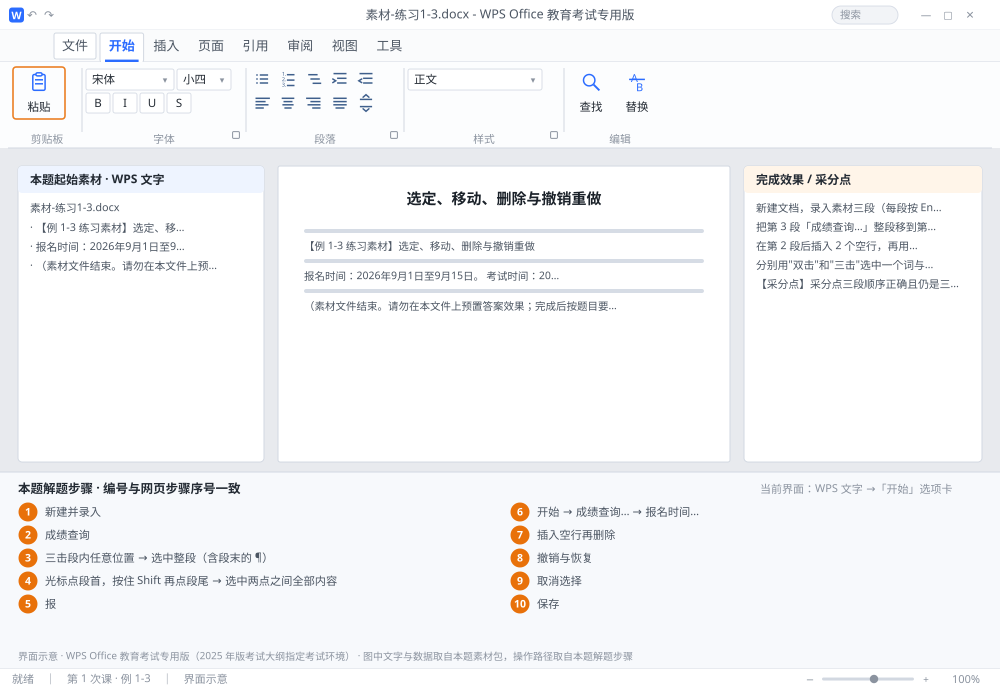

完成比对文档 · 例 1-3
选定、移动、删除与撤销重做 ｜ 第 1 次课 / WPS 文字 ｜ 网页：入门实操课.html ｜ 考试环境：WPS Office 教育考试专用版（2025 年版考试大纲指定考试环境）
用途 本页按修订后的题目要求与解题步骤生成，是交卷自查的结果基准：
逐项列出每一步应出现的可复核结果，配合模拟操作截图与解题结果文件使用。
它不是素材包的一部分，不会预置答案动作；起始素材仍从本题素材包下载。
一、本题起始素材包
目录：练习素材/练习1-3-选定与撤销/ ｜
下载包：练习素材/下载/练习1-3-选定与撤销.zip
二、题目要求
- 新建文档，录入素材三段（每段按 Enter 分段）。
- 把第 3 段「成绩查询…」整段移到第 1 段之前，移动后三段仍是三个独立段落。
- 在第 2 段后插入 2 个空行，再用删除键清除，最后用 Ctrl+Z 撤销、Ctrl+Y 恢复，观察变化。
- 分别用"双击"和"三击"选中一个词与一整段，看清两者差别后按一下方向键取消选择。
- 保存为 学号-姓名-练习1-3.docx。
三、解题步骤（编号与下方核对表、截图编号一致）
- 新建并录入。Ctrl+N 新建，按本题素材包中的起始文件逐行录入，每行末尾按一次 Enter，屏幕上应看到 3 个 ¶。
- 认识三种选中方式。把光标放到第 3 段文字中： 双击某个词 → 选中该词（中文为连续的汉字串，如「成绩查询」）；
- 三击段内任意位置 → 选中整段（含段末的 ¶）；
- 光标点段首，按住 Shift 再点段尾 → 选中两点之间全部内容。
- 移动整段。在第 3 段内三击选中整段 → Ctrl+X 剪切（段落消失）→ 把光标点到第 1 段最前面（「报」字之前）→ Ctrl+V 粘贴。
- 检查段落完整性。打开段落标记显示（「开始」选项卡的 ¶ 按钮），确认「成绩查询…」后面有独立的 ¶，且与「报名时间…」分属两段。若粘成了一整段，说明剪切时没选中段末 ¶，撤销重做一次。
- 插入空行再删除。光标放到第 2 段末尾按 2 次 Enter，出现 2 个空段；再把光标放在空行行首按 Delete 逐个删除（或选中空行按 Backspace）。
- 撤销与恢复。按 Ctrl+Z 一次，刚才删掉的空行回来了；再按 Ctrl+Y，又消失。撤销可连按多次，逐步回退。
- 取消选择。选中后按一下 → 或 ←，光标本复原位、文字不受影响——比用鼠标乱点安全。
- 保存。F12 另存为 学号-姓名-练习1-3.docx。顺序应为：成绩查询 / 报名时间 / 考试时间。
四、完成效果 / 采分点
采分点三段顺序正确且仍是三段（3 个 ¶） · 未误删文字 · 空行清除干净 · 撤销后已重新保存
五、逐项完成核对表
| 步骤 | 关键操作路径 | 应出现的结果（可复核） |
|---|
| 1 | 新建并录入 | 新建并录入 |
| 2 | 认识三种选中方式 | 「成绩查询」 |
| 3 | 三击段内任意位置 → 选中整段（含段末的 ¶） | 三击段内任意位置 → 选中整段（含段末的 ¶） |
| 4 | 光标点段首，按住 Shift 再点段尾 → 选中两点之间全部内容 | 光标点段首，按住 Shift 再点段尾 → 选中两点之间全… |
| 5 | 移动整段 | 「报」 |
| 6 | 检查段落完整性 | 「开始」、「成绩查询…」、「报名时间…」 |
| 7 | 插入空行再删除 | 插入空行再删除 |
| 8 | 撤销与恢复 | 撤销与恢复 |
| 9 | 取消选择 | 取消选择 |
| 10 | 保存 | F12、学号-姓名-练习1-3.docx |
六、模拟操作截图

界面示意 · WPS Office 教育考试专用版 · 橙色编号与本题解题步骤序号一致；
图中文字与数据取自本题素材包，功能入口取自本题解题步骤。
核对方法：按网页解题步骤完成并另存自己的成稿后，逐行比对本表第 3 列的
参数、公式、区域、文件名与对象数量；再对照网页「完成效果 / 采分点」检查版式是否一致。